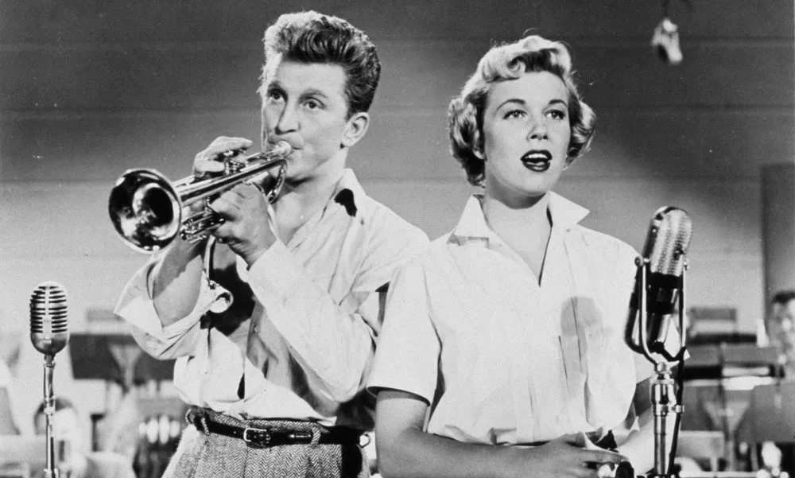
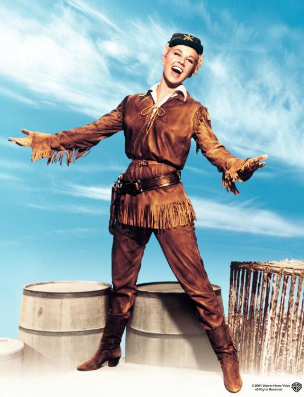
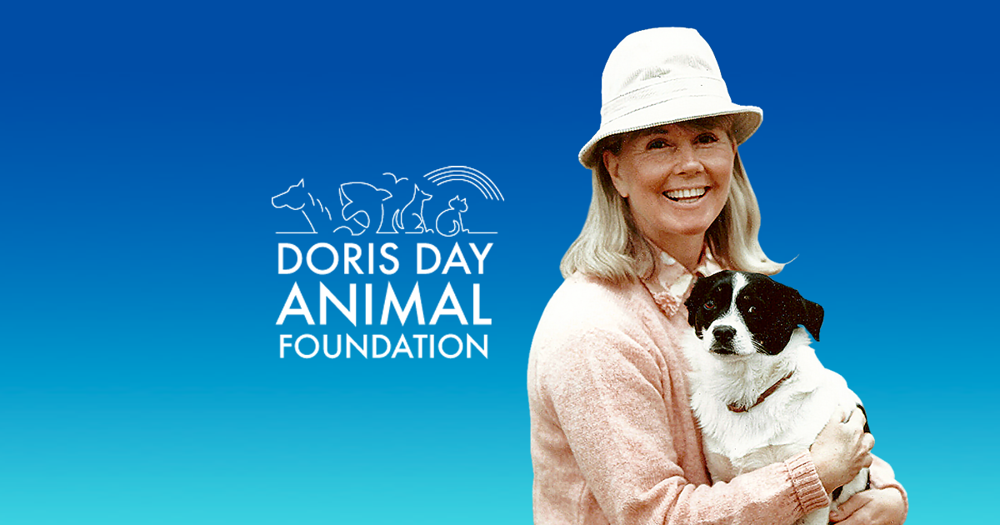
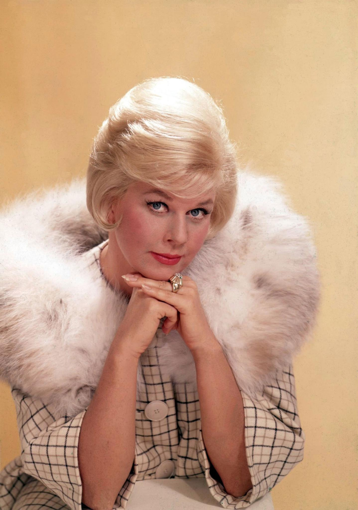

Who was she?
Doris Day was a multi-talented performer who made a name for herself in the entertainment industry through her singing and acting talents. She was born Doris Mary Ann Kappelhoff on April 3, 1922, in Cincinnati, Ohio. Her career spanned several decades and included successful forays into music, film and television.
Music Career:
Doris Day began her career as a singer with the Les Brown Band in the 1940s. She recorded several hits with the band, including "Sentimental Journey" and "My Dreams Are Getting Better All the Time." Her solo career took off in the 1950s with hits such as "Secret Love," "Que Sera, Sera (Whatever Will Be, Will Be)," and "Everybody Loves a Lover." She recorded over 650 songs, and her music remains popular to this day.
Film Career:
Doris Day's film career began in the 1940s with minor roles in films such as "Romance on the High Seas." She became a leading lady in the 1950s and 1960s and starred in numerous successful films. Some of her most memorable roles include "Calamity Jane," "Pillow Talk," "The Man Who Knew Too Much," and "That Touch of Mink." She received critical acclaim for her performances in "Love Me or Leave Me" and "The Pajama Game." Day was known for her wholesome, girl-next-door image, and her films were often romantic comedies.
Television Carrer:
Doris Day transitioned to television in the 1960s with "The Doris Day Show." The series ran for five seasons and showcased Day's comedic talents. She also made guest appearances on other television shows, including "The Love Boat" and "Murder, She Wrote."
Animal Welfare Activism:
In addition to her entertainment career, Doris Day was a passionate animal welfare activist. She founded the Doris Day Animal Foundation in 1978, which provides grants to animal welfare organizations and promotes spaying and neutering. She also opened the Doris Day Animal League in 1987, which advocates for animal welfare legislation. Day was a lifelong animal lover and devoted much of her time and resources to helping animals in need.
Legacy:
Doris Day was one of the most popular entertainers of her time and left a lasting legacy in the entertainment industry. She received numerous accolades throughout her career, including a Grammy Lifetime Achievement Award and a Cecil B. DeMille Award. Her music and films continue to be enjoyed by audiences around the world, and her animal welfare activism has inspired many. She was a talented and multifaceted performer whose career spanned several decades. Her legacy continues to inspire and entertain people around the world.
